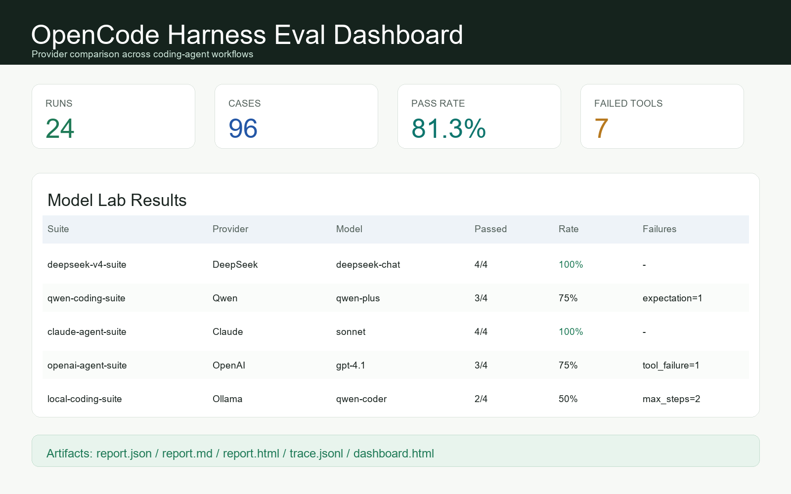
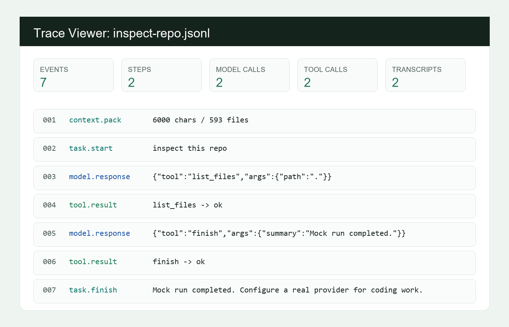

Model-neutral runtime
Provider presets for DeepSeek, Qwen, Claude, OpenAI, local OpenAI-compatible endpoints, vLLM, SGLang, Ollama, and mock mode.
Clean-room coding-agent infrastructure
OpenCode Harness runs the same coding-agent workflow through a shared agent loop, permissioned tools, MCP extension points, JSONL traces, and reproducible eval suites.
Why it exists
Coding agents often ship as model-specific demos with hidden prompts, inconsistent tools, and weak audit trails. OpenCode Harness focuses on the runtime and evaluation layer: one task surface, many providers, reproducible traces, and reports you can inspect.
What is inside
Provider presets for DeepSeek, Qwen, Claude, OpenAI, local OpenAI-compatible endpoints, vLLM, SGLang, Ollama, and mock mode.
File reads/writes, search, patches, shell, git diff, repo maps, context packs, todos, and finish events with conservative policy gates.
Stdio MCP tools, resources, prompts, per-server approvals, lifecycle diagnostics, and namespace collision handling.
JSONL traces, provider transcripts, replay summaries, Markdown/HTML reports, terminal trace viewer, and eval dashboard.
Product surface


python -m opencode_harness eval examples/mock-suite.json --preset mock --max-steps 2
python -m opencode_harness tui runs/latest.jsonl
python -m opencode_harness dashboard eval-runs --output eval-runs/dashboard.htmlModel Labs
v0.1.0 released
The v0.1.0 release includes wheel and source artifacts, GitHub Actions CI, a release workflow, a model-eval workflow example, provider benchmark guide, changelog, and a reproducible local demo flow.
Download v0.1.0